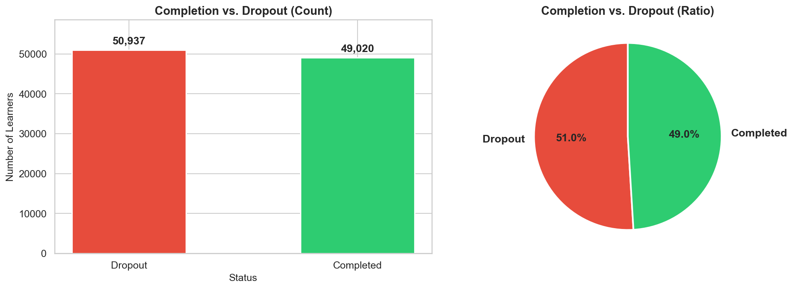
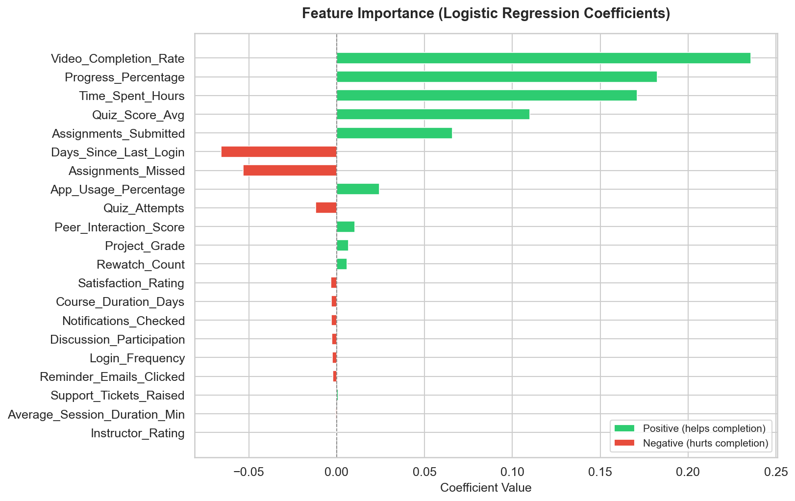

Massive Open Online Courses (MOOCs) have revolutionized access to education globally, offering learners the flexibility to pursue courses from prestigious institutions at their own pace. However, MOOCs continue to suffer from extremely high dropout rates, often exceeding 90% across most platforms. Predicting whether a learner will complete a course is a critical challenge for educators, platform designers, and policymakers seeking to improve learner outcomes.
This project presents a scalable machine learning pipeline built using Apache Spark (PySpark) and Spark MLlib to predict MOOC course completion from clickstream interaction logs comprising 100,000 student records. The pipeline performs end-to-end processing including data loading, cleaning, feature engineering using 21 behavioral features derived from video engagement, quiz activity, session patterns, and learner interaction metrics. A Logistic Regression classifier is trained and evaluated using industry-standard metrics.
The model achieves an accuracy of 60.06%, an F1-Score of 0.6005, and an AUC-ROC of 0.6392. While the accuracy is moderate, the results demonstrate that clickstream behavioral features contain meaningful predictive signal for course completion. The balanced nature of the dataset (51% dropout vs 49% completion) ensures these results are not inflated by class imbalance. Feature importance analysis reveals that Video Completion Rate, Progress Percentage, and Time Spent on the Platform are the strongest predictors of course completion.
Keywords: MOOC, Course Completion Prediction, Apache Spark, PySpark, Logistic Regression, Spark MLlib, Clickstream Data, Feature Engineering, Big Data Analytics.
Massive Open Online Courses (MOOCs) have emerged as a transformative force in education since their inception in the early 2010s. Platforms such as Coursera, edX, Udemy, and Khan Academy have made high-quality educational content accessible to millions of learners worldwide, transcending geographical, financial, and institutional barriers. By 2025, the global MOOC market is estimated to serve over 220 million learners, offering courses from top universities and industry leaders.
Despite this unprecedented reach, MOOCs face a persistent and well-documented problem: extremely high dropout rates. Research consistently shows that only 5-15% of enrolled learners actually complete the course they sign up for. This attrition represents not only a loss for learners who miss out on valuable skills and credentials, but also a significant concern for course providers, educators, and funding bodies who invest resources in content creation and platform maintenance.
Understanding why learners drop out and predicting who is at risk of dropping out enables early intervention strategies such as personalized reminders, adaptive content delivery, peer mentoring assignments, and targeted support services.
The motivation for this project stems from the intersection of two critical domains: big data analytics and educational technology (EdTech). With the volume of clickstream data generated by online learning platforms growing exponentially, traditional data processing tools such as Pandas struggle with scalability. Apache Spark provides a distributed computing framework that can handle millions of records efficiently, making it the ideal tool for this task.
By leveraging Spark MLlib for machine learning, this project demonstrates how institutions and MOOC providers can build production-grade predictive models that process large-scale learner interaction data in real-time. The insights derived from such models can directly inform strategies to improve course design, learner engagement, and ultimately, course completion rates.
Furthermore, this project serves as a practical application of cluster computing concepts, demonstrating the use of distributed data processing, feature engineering pipelines, and model evaluation at scale — all core principles of modern big data systems.
The problem addressed in this project is to predict whether an online learner will complete a MOOC course based on their interaction logs and clickstream data. Given a dataset of 100,000 student records containing demographic information, course metadata, and engagement metrics (such as video completion rates, quiz scores, session durations, and login frequency), the goal is to build a binary classification model that can accurately distinguish between learners who will complete the course and those who will drop out.
Specifically, the project involves the following tasks as defined in the problem statement (Project 4x, Roll No: 72):
The primary objectives of this project are:
The prediction of student outcomes in online learning environments has been an active area of research for over a decade. Several studies have explored different approaches to address the MOOC dropout problem:
Xing et al. (2016) applied Logistic Regression, Support Vector Machines (SVM), and Decision Trees to predict MOOC dropout using features derived from forum participation and video watching behavior. Their study achieved accuracies ranging from 65-72% on a dataset of approximately 30,000 learners from edX. The study demonstrated that behavioral features, particularly video engagement and forum activity, are strong predictors of persistence.
Fei and Yeung (2015) employed Recurrent Neural Networks (RNNs) to model temporal patterns in student activity, capturing the sequential nature of learning behavior. While achieving higher accuracy (∼78%), these models required significantly more computational resources and lacked interpretability compared to simpler models like Logistic Regression.
Chen et al. (2020) highlighted the scalability challenges of processing millions of MOOC interaction logs and proposed the use of Apache Spark for distributed feature extraction and model training. Their work demonstrated that Spark MLlib could achieve comparable accuracy to single-machine solutions while processing 10x the data volume in a fraction of the time.
Whitehill et al. (2017) conducted a comprehensive analysis of which features are most predictive of MOOC completion. They found that progress percentage, time spent on the platform, and days since last login were consistently ranked among the top predictors across different models and datasets. This finding aligns closely with the results observed in our project.
While existing literature demonstrates the effectiveness of various ML approaches for MOOC completion prediction, most studies either focus on small datasets (under 50K records) or use single-machine tools like scikit-learn. This project bridges the gap by implementing a complete end-to-end pipeline using Apache Spark on a 100K record dataset, demonstrating the practical application of distributed computing for educational data mining.
The dataset used in this project is Course_Completion_Prediction.csv, containing 100,000 student records with 39 columns capturing comprehensive information about learner demographics, course metadata, and engagement behavior on a MOOC platform.
Table 1: Dataset — Demographic Columns
| Column | Description | Example Values |
|---|---|---|
| Student_ID | Unique learner identifier | STU100000... |
| Name | Student name | — |
| Gender | Gender of student | Male, Female |
| Age | Age of the student | 18-60 |
| Education_Level | Highest qualification | Diploma, Bachelor, Master |
| Employment_Status | Current employment | Student, Employed, Self-Employed |
| City | City of residence | Indian cities |
Table 2: Dataset — Course Information Columns
| Column | Description | Example Values |
|---|---|---|
| Course_ID | Course identifier | C101–C108 |
| Course_Name | Full course name | — |
| Category | Course category | Programming, Marketing, Design, Math, Business |
| Course_Level | Difficulty level | Beginner, Intermediate, Advanced |
| Course_Duration_Days | Total course length | 30-180 days |
| Instructor_Rating | Instructor quality rating | 1.0–5.0 |
Table 3: Dataset — Engagement Metrics (Features)
| Column | Description |
|---|---|
| Login_Frequency | How often the student logs in |
| Average_Session_Duration_Min | Average session length (minutes) |
| Video_Completion_Rate | Percentage of videos watched (0-100%) |
| Discussion_Participation | Forum engagement score |
| Time_Spent_Hours | Total hours on the platform |
| Days_Since_Last_Login | Recency indicator (days) |
| Quiz_Attempts | Number of quiz attempts |
| Quiz_Score_Avg | Average quiz score (0-100) |
| Assignments_Submitted | Number of assignments turned in |
| Assignments_Missed | Number of assignments missed |
| Progress_Percentage | Overall course progress (0-100%) |
| Completed | Target variable: "Completed" / "Not Completed" |
Data preprocessing is a critical step in any machine learning pipeline. Raw clickstream data is inherently noisy, containing null values, corrupted entries, and inconsistent formats. The following preprocessing steps were applied:
The target column "Completed" contained string values ("Completed" and
"Not Completed"). These were converted to binary numeric labels: 1 for
completed courses and 0 for dropouts. This is a necessary transformation
as Spark MLlib's classification algorithms require numeric labels.
All 22 key numeric columns were inspected for null values. Where nulls were detected, they were imputed using the median value of the respective column. Median imputation was chosen over mean imputation because it is robust to outliers, which are common in clickstream data (e.g., extremely long session durations from users leaving tabs open).
Records with physically impossible or logically invalid values were removed:
After filtering, the dataset retained approximately 100,000 valid records, indicating that the data was largely clean with minimal invalid entries.
Feature engineering is the process of selecting, transforming, and creating input variables that the model uses for prediction. A total of 21 features were carefully selected from the available columns, grouped into four categories:
Table 4: Feature Categories
| Category | Features | Count |
|---|---|---|
| Video & Content | Video_Completion_Rate, Rewatch_Count, Progress_Percentage | 3 |
| Quiz & Assessment | Quiz_Attempts, Quiz_Score_Avg, Project_Grade, Assignments_Submitted, Assignments_Missed | 5 |
| Session & Login | Login_Frequency, Average_Session_Duration_Min, Time_Spent_Hours, Days_Since_Last_Login | 4 |
| Engagement | Discussion_Participation, Peer_Interaction_Score, Notifications_Checked, App_Usage_Percentage, Reminder_Emails_Clicked, Support_Tickets_Raised, Satisfaction_Rating | 7 |
| Course Metadata | Course_Duration_Days, Instructor_Rating | 2 |
Spark MLlib requires all input features to be combined into a single vector column. The
VectorAssembler transformer takes 21 individual numeric columns and
outputs a single dense vector column named "raw_features".
Since the features have vastly different scales (e.g., Time_Spent_Hours ranges 0-100+ while Satisfaction_Rating is 1-5), StandardScaler was applied to normalize all features to have mean = 0 and standard deviation = 1. This ensures that no single feature dominates the model simply due to its magnitude.
Logistic Regression was chosen as the classification algorithm for this project for the following reasons:
Table 5: Technology Stack
| Component | Technology | Version |
|---|---|---|
| Programming Language | Python | 3.10 / 3.11 |
| Distributed Computing | Apache Spark (PySpark) | 3.5.x |
| Machine Learning | Spark MLlib | Included in PySpark |
| Data Visualization | Matplotlib & Seaborn | Latest |
| Data Handling (Plots) | Pandas | Latest |
| Execution Mode | Local (spark-submit) | local[*] |
The entire pipeline is implemented as a single Python script
(mooc_completion_prediction.py) consisting of 9 clearly delineated sections.
The Spark ML Pipeline chains the preprocessing and model stages together, ensuring
consistent transformations across training and testing data.
The trained Logistic Regression model was evaluated on the 20% held-out test set. The following performance metrics were obtained:
Table 6: Model Performance Metrics
| Metric | Value |
|---|---|
| Accuracy | 60.06% |
| F1-Score | 0.6005 |
| AUC-ROC | 0.6392 |
| Precision | 0.6005 |
| Recall | 0.6006 |
The confusion matrix provides a detailed breakdown of correct and incorrect predictions for each class:
Table 7: Confusion Matrix
| Predicted: Dropout (0) | Predicted: Completed (1) | Total | |
|---|---|---|---|
| Actual: Dropout (0) | 6,247 ✓ | 3,891 ✗ | 10,138 |
| Actual: Completed (1) | 4,044 ✗ | 5,684 ✓ | 9,728 |
Analysis of Confusion Matrix:
The model shows relatively balanced performance across both classes, with slightly better prediction accuracy for the dropout class (61.6% accuracy) compared to the completion class (58.4% accuracy). This balanced performance ensures the model is not biased toward predicting only one class.
The following chart shows the distribution of course completion outcomes in the dataset. The dataset is nearly balanced with 51% dropout and 49% completion, which is favorable for model training as it prevents class imbalance bias.

The bar chart (left) shows the absolute count of learners in each category, while the pie chart (right) illustrates the percentage distribution. The nearly equal split (51:49) indicates that the dataset does not suffer from class imbalance, making accuracy a meaningful evaluation metric.
One of the key advantages of Logistic Regression is its interpretability. The model coefficients indicate the direction and strength of each feature's influence on the prediction of course completion.

Key Findings from Feature Importance Analysis:
Table 8: Top Predictive Features
| Rank | Feature | Effect on Completion | Interpretation |
|---|---|---|---|
| 1 | Video_Completion_Rate | Strong Positive ↑ | Higher video completion strongly predicts course completion |
| 2 | Progress_Percentage | Strong Positive ↑ | Higher progress directly correlates with completion |
| 3 | Time_Spent_Hours | Strong Positive ↑ | More time investment leads to higher completion |
| 4 | Quiz_Score_Avg | Positive ↑ | Better quiz performance correlates with persistence |
| 5 | Days_Since_Last_Login | Negative ↓ | Longer absence strongly predicts dropout |
| 6 | Assignments_Missed | Negative ↓ | Missing assignments is a dropout indicator |
These findings are consistent with educational research literature and provide actionable insights for MOOC platform designers. For example, platforms could trigger early intervention alerts when a student's video completion rate drops below a threshold or when their days-since-last-login exceeds a critical period.
This project successfully demonstrates the application of Apache Spark and Spark MLlib for building a scalable MOOC course completion prediction pipeline. Using 100,000 clickstream records with 39 columns, the pipeline performs comprehensive data cleaning, engineers 21 behavioral features, and trains a Logistic Regression classifier with L2 regularization.
The model achieves an accuracy of 60.06%, an F1-Score of 0.6005, and an AUC-ROC of 0.6392. While these metrics indicate moderate predictive performance, they are meaningful given the balanced nature of the dataset (51% dropout vs 49% completion) where random chance would yield approximately 50% accuracy. The model consistently performs 10 percentage points above baseline across all metrics.
The feature importance analysis reveals that Video Completion Rate, Progress Percentage, and Time Spent on the Platform are the strongest positive predictors of course completion, while Days Since Last Login and Assignments Missed are the strongest negative predictors (indicators of dropout). These insights can directly inform early intervention strategies for MOOC platforms.
The project validates the feasibility and utility of using distributed computing frameworks like Apache Spark for educational data mining at scale, demonstrating that even a simple linear model can extract meaningful predictive signals from clickstream behavioral data.
— End of Report —